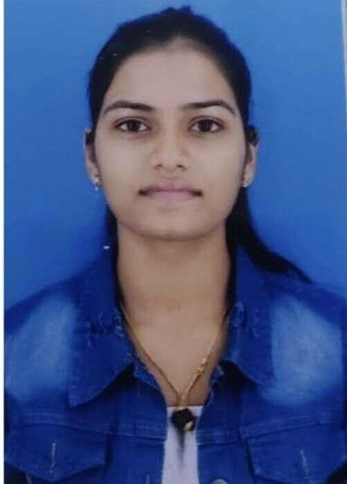

To work in an organization where, I can grow with it, My priority is to learn new skills, in a globally competitive environment and get an opportunity to prove my technical skills and utilize my knowledge in the growth of the organization by enabling me to apply my technical & creative skills to my full extent and allowing me to be exposed to the cutting edge technology in the industry.
PROJECTS
- PLANT DISEASE DETECTION USING CNN
- Accurately identify crop diseases and pests for effective management.
- Implement CNN classifiers tailored to recognize diseases across various plant species.
- Enhance agricultural practices by enabling early disease detection and targeted intervention.
- Develop a robust system capable of handling diverse environmental conditions.
- Provide a tool that aids farmers in timely and precise decision-making regarding crop health.
- NOTEPAD SOFTWARE
- Efficient note-taking, reminders, and list creation.
- Drafting assistance for managed and course assessments.
- Text formatting options: bold, italics, bullet points.
- Easy saving, editing, and retrieval for future reference.
- User-friendly interface for seamless navigation and usability.
VALUE ADDITION- WORKSHOP,SEMINAR CERTIFICATION
- Attended webinar on the theme “Motivational Session by Successful Entrepreneur/Startup Founder” organized by Institution’s Innovation Council, Buddha Institute of Technology, Gida Gorakhpur held on 05 Feb 2022.
- Attended 3 days, has participated on "Skill Training on Student Development Program" from 13-jan-22 to 15-jan-22 at the training center of Pune Institute of Business Management.
- Attended 21 days, course on “PYTHON DEVELOPMENT” and has successfully completed the training programme organized by Summer Training on Python from Gyandeep at Buddha Institute of Technology, Gida, Gorakhpur held during the period of 23th August,2021 to 12th September,2021.
SKILLS
- HTML
- CSS
- Php
- JAVASCRIPT
- React JS.
- Node JS.
- SQL
EDUCATION
Buddha Institute of Technology-B.Tech,Informaton Technology,July2019 to July2023 CGPA:7.43
Relevant Courses
INDUSTRIAL TRAINING
- 4 week of Internship from 28thjune,2022 to 28thjuly,2022 at Numeric Infosystem Pvt. Ltd at Gwalior. In that internship, I had learned about Front end & Back end technology,Mern technology,HTML(Hyper Text Markup Language),CSS(Cascading Style Sheets).
ACHIEVEMENTS & AWARDS
- Certificate on achieved First position in Technical Model presentation on Innovation Ideas-2022, jointly organized in collaboration with Engineering Council of India, New Delhi from 10th-11thNovemeber,2022.
- Certificate on achieved awarded in recognition of Excellence Performance in Placement Buddha Star Award that is organized on 04th April,2023.
DECLARARTION
I hereby declare that all the above mentioned information are true and correct to the best of the knowledge and believe.